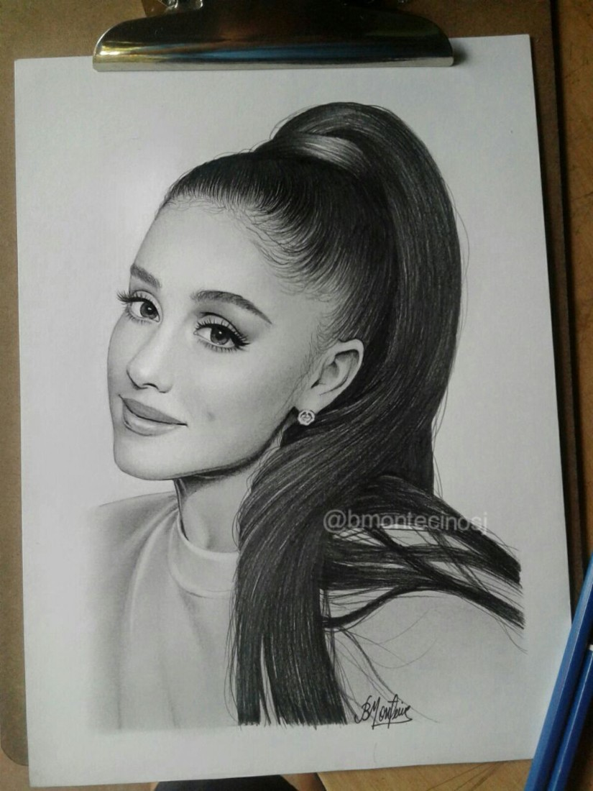
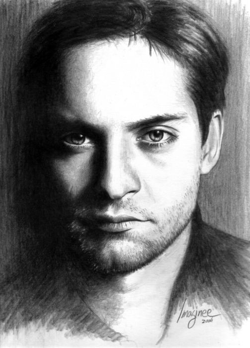
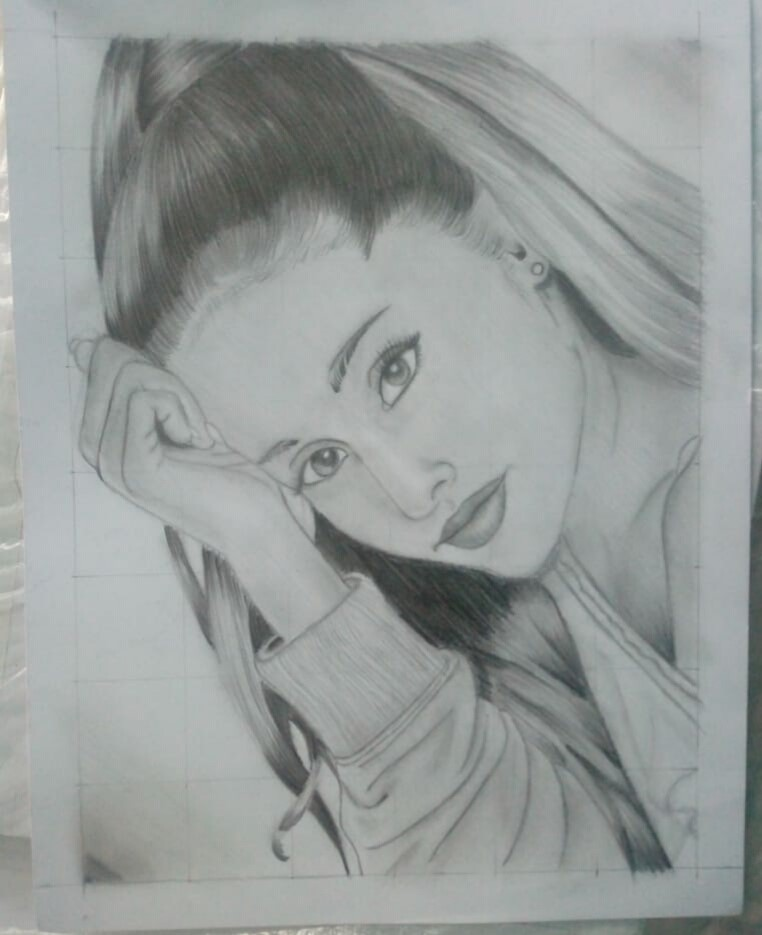
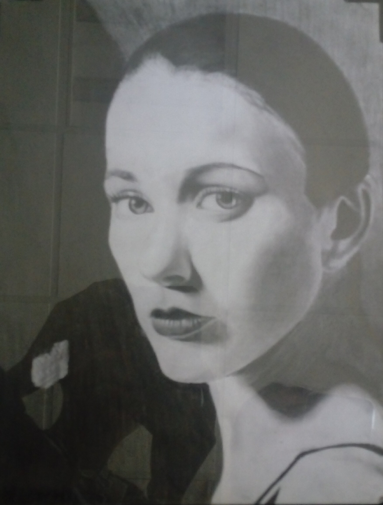

DIBUJOS DE PERSONAS


La mayor diferencia entre personajes humanos y objetos artificiales es que los primeros están vivos y móviles, creando diferentes posturas dependiendo de su acción, personalidad y estado de ánimo. Esto es algo que usted debe comenzar su dibujo, porque incluso el ser humano más anatómicamente realista se verá como una muñeca o una escultura si no el gesto.
En el dibujo, un gesto es un conjunto de básicos, fluyendo muy bien las líneas que definen la pose del personaje sin incluir ningún detalle. Un buen gesto de dibujo debe mostrar la energía y la acción del personaje, sin realmente mostrar el carácter sí mismo. Eso es por qué usted debe aprender primero, y sólo entonces centrarse en cosas más detalladas como los músculos reales.


Como se muestran a continuacion diferentes dibujos mostrando que tu tambien lo puedes lograr solo falta de tener tiempo y tener esas ganas de aprender y mejorar.